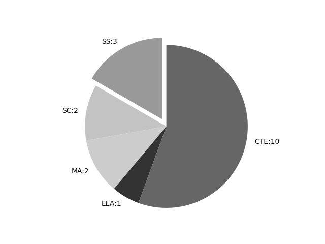

Nevada
Report date: 2021-07-08
The frequency of all keywords found in this state's standards: 18
Comparable state score: 0.072 (median: .303, SD: .324)
The frequency above is the sum of all keywords found in all of this state's four core academic standards and the state's CTE/career standards. This total count is broken down by keyword and discipline area below.
On this site, 'comparable scores' are calculated as: keywords found divided by total words in the standards document(s) - multiplied by 100,000. The comparable scores attempt to normalize data, accounting for very different sizes of curriculum guidance documentation.
Frequencies by keyword or phrase:- spatial: 11
- geographic information system: 1
- geospatial: 1
- Global Positioning System: 2
- GIS: 3

Frequencies by discipline area: - SS: 3
(Comp: 1.019) - SC: 2
(Comp: 0.113) - MA: 2
(Comp: 0.21) - ELA: 1
(Comp: 0.118) - CTE: 10
(Comp: 0.047)
External support files:
Examples of keyword use by discipline area (and document): - CTE
- Natural-Resources-and-Wildlife-Management-STDS-ADA.pdf, page:11, position:378
GPSGIS IN NATURAL RESOURCE MANAGEMENT PERFORMANCE STANDARD 6.1 : INVESTIGATE GPSGIS SYSTEMS AND THEIR APPLICATIONS 6.1.1 Define the uses of geographic information systems (GIS) and spatial analysis as it applies to natural resource mana - Natural-Resources-and-Wildlife-Management-STDS-ADA.pdf, page:11, position:336
THE IMPORTANCE AND APPLICATION OF GPSGIS IN NATURAL RESOURCE MANAGEMENT PERFORMANCE STANDARD 6.1 : INVESTIGATE GPSGIS SYSTEMS AND THEIR APPLICATIONS 6.1.1 Define the uses of geographic information systems (GIS) and spatial analysis as it applies to na - Natural-Resources-and-Wildlife-Management-STDS-ADA.pdf, page:11, position:490
APPLICATIONS 6.1.1 Define the uses of geographic information systems (GIS) and spatial analysis as it applies to natural resource management 6.1.2 Describe the purpose and function of a Global Positioning System (GPS) 6.1.3 Demonstrate the ability to use a G - Natural-Resources-and-Wildlife-Management-STDS-ADA.pdf, page:11, position:368
OF GPSGIS IN NATURAL RESOURCE MANAGEMENT PERFORMANCE STANDARD 6.1 : INVESTIGATE GPSGIS SYSTEMS AND THEIR APPLICATIONS 6.1.1 Define the uses of geographic information systems (GIS) and spatial analysis as it applies to natural - Aerospace-Engineering-STDS-ADA.pdf, page:13, position:1224
common aviation navigation aids 8.2.2 Interpret navigation aids on a map 8.2.3 Describe the purpose and functions of the Air Traffic Control (ATC) system 8.2.4 Describe the operation of the Global Positioning System (GPS) and devices 8.2.5 Interpret an indicatio - Environmental-Management-STDS-ADA.pdf, page:10, position:121
- Environmental-Management-STDS-ADA.pdf, page:10, position:540
5.1.3 Explain how a GPS unit acquires its signals to define a location PERFORMANCE STANDARD 5.2 : USE GEOSPATIAL ANALYSIS SOFTWARE 5.2.1 Investigate Google Earth functions for geospatial analysis 5.2.2 Use other GIS software (i.e. - Manufacturing-Technologies-STDS-ADA.pdf, page:7, position:1372
caliper) 3.2.5 Utilize measurement systems to solve real manufacturing problems PERFORMANCE STANDARD 3.3 : DEMONSTRATE SPATIAL REASONING AND 3D MODELING TECHNIQUES 3.3.1 Define spatial reasoning 3.3.2 Identify spatial reasoning techn - Architectural-Design-STDS-ADA.pdf, page:5, position:1520
lines (i.e., styles and weights) 1.3.4 Annotate sketches legibly using an appropriate architectural lettering style PERFORMANCE STANDARD 1.4: DEMONSTRATE SPATIAL REASONING 1.4.1 Define spatial reasoning 1.4.2 Identify spatial reasoning techn - Architectural-Design-STDS-ADA.pdf, page:9, position:1696
4.9 : PREPARE ARCHITECTURAL CONSTRUCTION DRAWINGS 4.9.1 Transcribe a floor plan from an existing plan 4.9.2 Transcribe a site plan from an existing plan using geographic data (e.g., GIS, maps, and aerials) 4.9.3 Draw an exterior ele
- ELA
- ADA_CC_ELAStandards.pdf, page:27, position:4345
to better understand each of the words.6.Acquire and use accurately grade-appropriate conversational, general academic, and domain- speciÞc words and phrases, including those that signal spatial and temporal relationships (e.g., After dinner
- MA
- mathstandards.pdf, page:2, position:236
focus and coherence Mathematics experiences in early childhood settings should concentrate on (1) number (which includes whole number, operations, and relations) and (2) geometry, spatial relations, and measurement, with more mathemat - mathstandards.pdf, page:8, position:1429
or counting the number of objects that remain in a set after some are taken away. (2) Students describe their physical world using geometric ideas (e.g., shape, orientation, spatial relations) and vocabulary. They identify, na
- SC
- NSACCSScienceTopics.pdf, page:75, position:1199
names of specific periods or epochs and events within them.] MS-ESS2-2. Construct an explanation based on evidence for how geoscience processes have changed Earth™s surface at varying time and spatial scales. [Clarification Statement: Emphasis is o - NSACCSScienceTopics.pdf, page:115, position:1544
of solar system objects, and the impact cratering record of planetary surfaces.] HS-ESS2-1.Develop a model to illustrate how Earth™s internal and surface processes operate at different spatial and temporal scales to form continental and ocean
- SS
- NVACSforSocialStudies.pdf, page:17, position:2039
have influenced the political, social, and cultural landscape of Nevada. Geographic representations (G) SS.4.23. Create maps that include human and physical features and that demonstrate spatial patterns in Nevada. Human environment interact - NVACSforSocialStudies.pdf, page:22, position:459
Civilizations (prior to 1500) This content area focuses on the geography, history, and culture of early world civilizations while emphasizing disciplinary inquiry. There is an intentional focus on spatial understanding of the world and the location of co - NVACSforSocialStudies.pdf, page:27, position:1318
in particular areas. Global interconnections (G) SS.6-8.WGGS.31. Explain how the relationship between the environmental characteristics of place and the production of goods influence the spatial patterns of world trade. Exchange and markets (
{kind=link}